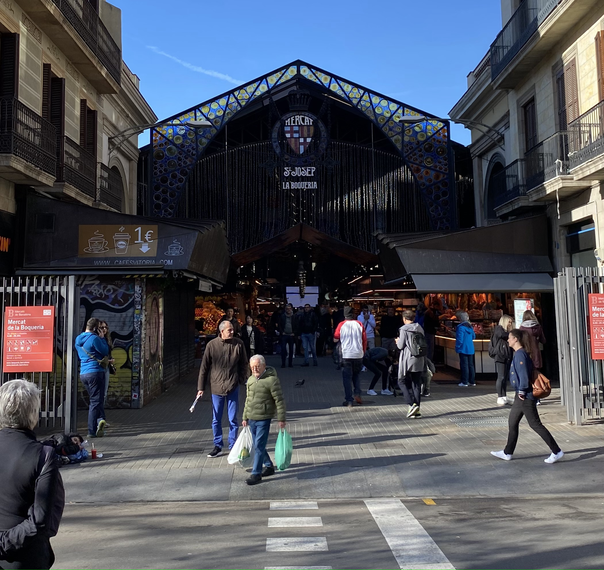

Le marché de la boqueria
Description :
La Boqueria est bien plus qu'un simple marché à Barcelone. C'est un véritable spectacle pour les
sens, un endroit où l'on peut découvrir la richesse et la diversité de la cuisine catalane et méditerranéenne.
Situé sur la célèbre avenue La Rambla, ce marché animé est un incontournable pour les habitants et les visiteurs
de la ville.
Dès que l'on entre dans la Boqueria, on est enveloppé par une symphonie de couleurs, d'odeurs et de
sons. Les étals regorgent de fruits frais et juteux, de légumes croquants, de fruits de mer scintillants et de
viandes savoureuses. Des montagnes de fromages, des olives marinées et des fruits secs sont disposés avec soin,
invitant à la dégustation et à l'exploration.
Les bars à tapas et les stands de cuisine offrent une variété infinie de plats traditionnels et
contemporains, allant des classiques comme les croquettes et les calamars frits aux créations plus audacieuses et
innovantes. Les chefs s'affairent derrière les comptoirs, préparant des plats frais et alléchants à déguster sur
place ou à emporter.
Mais la Boqueria est bien plus qu'un marché alimentaire. C'est un lieu de rencontre et de
convivialité, où les habitants se retrouvent pour discuter, partager un verre et déguster des spécialités locales.
C'est aussi un endroit où l'on peut découvrir la culture et les traditions catalanes à travers sa cuisine, ses
produits et ses artisans passionnés.
En visitant la Boqueria, on plonge dans l'âme de Barcelone, où l'authenticité et la générosité se
reflètent dans chaque étal et chaque bouchée. C'est une expérience sensorielle inoubliable qui réveille les
papilles et éveille l'esprit, et qui laisse une empreinte durable dans le cœur de ceux qui ont eu la chance de la
vivre.
.......
Nous sommes allés à la Boqueria deux fois durant notre voyage. C'est l'endroit parfait pour se poser quelques minutes tout en sirotant un smoothie et en grignotant du jambon ibérique. Le lieu ressemble à un marché commun, le seul point qui le différencie des autres c'est qu'il est énorme et le nombre de produits proposés n'est pas seulement astronomique mais aussi très diversifié.
